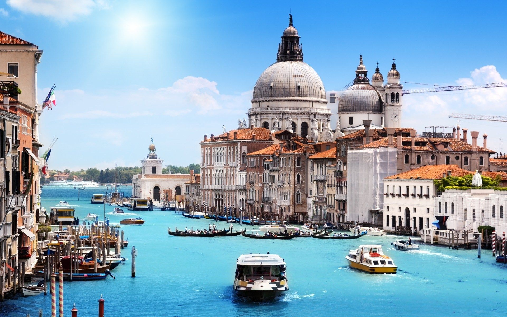
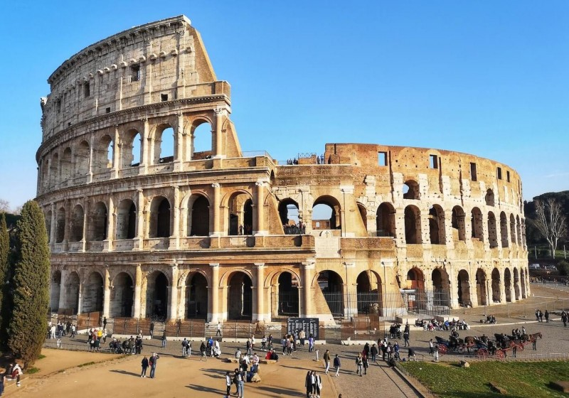
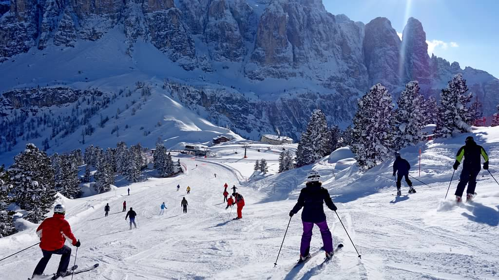

Things to Do in Italy

Seeing some of the world's most famous sights certainly tops everyone's list when traveling in Italy. But taking part in an activity or trying something new, especially something you can share with locals, adds a special dimension to a trip.
Recommendations
Visit the Colosseum (Rome)
Construction of the Colosseum took eight years and was financed with plunder taken from Jerusalem. The Colosseum, also called the Amphitheatrum Flavium, was opened by emperor Titus with games and festivities that lasted 100 days and cost the lives of 5,000 animals. Emperor Domitian, Titus' successor, later expanded the amphitheatre with an extra storey and a number of spaces underneath the Colosseum. This made the Colosseum of Rome the largest amphitheatre in Roman history, and it is considered one of the seven wonders of the world.
During the middle ages, various earthquakes destroyed much of the Colosseum. In later centuries the ruins were stripped by popes and others to reuse the stones as building material for churches and palaces. An end was put to this plundering under Pope Benedict XIV in 1749. He considered the Colosseum Rome to be holy ground because of its important history; the blood of many Christian martyrs has been spilled there.
Book NowRead More
Gondola Ride (Venice)

Gondola rides in Venice are pretty much exactly as you’ve pictured them in your daydreams- the gondolier, (aka the driver), sports the iconic striped shirt with a red handkerchief tied around their neck and straw hat on their head. Using their long oar, they’ll direct you through the Grand Canal, under bridges and past houses located directly on the water. Gondola rides are a once in a lifetime experience and one you’ll regret missing if you don’t take one.
Book NowRead More
Climb at Campanile (Venice)

For a bird’s-eye view of Venice, you can ride the elevator to the top of the Campanile (bell tower). Completed in 912, it is the tallest building in all of Venice, and one of the oldest, too. In 1902, disaster struck, and it collapsed completely, but it was reconstructed while trying to stay as true as possible to the original, so today you can see pretty much the same tower that Venetians saw over 1,000 years ago. The Dolomites mountain range can even be seen in the distance on clear days.
Book NowRead More
Hike at Cinque Terre (La Spezia)

Hiking in the Cinque Terre is one of the best things to do in Italy. Its hiking trails are among the most beautiful in Europe and if you are an outdoor lover, or just someone who wants some exercise in between decadent Italian meals, it is one of the most rewarding ways to enjoy Italy’s spectacular coastline.
But when you hike the Cinque Terre you need to come prepared. From understanding trail difficulties to packing the right things and going at the correct time of year, being well informed will make the difference between a life-changing hike and a wearying slog.
Book NowRead More
Ski at Dolomites (Venice)
The Dolomites (i Dolomiti) is the world’s largest interconnected ski area. In fact, the number of lifts and the ability to go from valley to valley is almost as breathtaking as the physical beauty of the mountains.
On June 26, 2009, The Dolomites mountains were placed on the prestigious UNESCO list of Natural World Hertiage Sites. This confirms the Dolomites’ status as one of the world’s most beautiful and unique natural wonders.
Over 1,100 kilometres of runs are groomed every night, leaving perfect corduroy lines on the first runs. You can enjoy 50 kilometres of comfortable fast skiing each day, find some deeper snow to practice your powder turns, or even challenge your nerve on the run named after the multiple Olympic gold-medallist, Alberto Tomba.
Book NowRead More